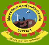

WIZARD of COMPUTER SCIENCE
BIPIN TRIPHATI KUMAUN INSTITUTE OF TECHNOLOGY

The Common Admission Test (CAT) is a computer based test held in India. This test scores a person on the bases of quantitative ability, data interpretation, verbal ability and logical reasoning. The Indian Institutes of Management (IIMs) started this exam and use the test for selecting students for their business administration programs.The test is conducted every year by one of the IIM's based on a policy of rotation. In August 2011, it was announced that Indian Institutes of Technology (IITs) and Indian Institute of Science (IISc) would also use the CAT scores, instead of the Joint Management Entrance Test (JMET), to select students for their management programmes from 2012-14 year. Before 2009, CAT was a paper based test conducted on a single day for all candidates. The pattern, number of questions and duration have seen considerable variations over the years.
he Graduate Aptitude Test in Engineering (GATE) is an all-India examination that primarily tests the comprehensive understanding of various undergraduate subjects in engineering and science. GATE is conducted jointly by the Indian Institute of Science, Bangalore and the seven Indian Institutes of Technology (Bombay, Delhi, Guwahati, Kanpur, Kharagpur, Madras and Roorkee) on behalf of the National Coordination Board – GATE, Department of Higher Education, Ministry of Human Resources Development (MHRD), Government of India. The GATE score of a candidate reflects the relative performance level of a candidate. The score is used for admissions to various post-graduate education programs (e.g. Master of Engineering, Master of Technology, Doctor of Philosophy) in Indian higher education institutes, with financial assistance provided by MHRD and other government agencies. Recently, GATE scores are also being used by several Indian public sector undertakings (i.e., government-owned companies) for recruiting graduate engineers in entry-level positions. It is one of the most competitive examinations in India.
Indian Engineering Services (IES) are the civil services that meet the technical and managerial functions of the Government of India. Like most countries, the Government of India recruits its civil servants and officials on the basis of merit, the middle management positions in the bureaucracy are filled through competitive exams. Large number of candidates take these exams, competing for limited posts. IES officers are appointed by Hon'ble President of India on the recommendations made by the Union Public Service Commission (UPSC). A combined four-stage competitive examination (comprising six tests), called the Engineering Services Examination (ESE) is conducted by the UPSC for recruitment to the Indian Engineering Services.
The Indian Administrative Service is the premier[2] administrative civil service of the Government of India. IAS officers hold key and strategic positions in the Union Government, States[2] and public-sector undertakings.[2] Like in various countries (example UK) following Parliamentary system, IAS as the permanent bureaucracy in India forms an inseparable part of the executive branch of the Government of India thus providing continuity and neutrality to the administration. Unlike Candidates selected to other civil services, a person once appointed to Indian Administrative Service or Indian Foreign Service (IFS) becomes ineligible to reappear in Civil Services Examination conducted by Union Public Service Commission because there are no higher civil services other than aforementioned two services under Government of India.[3]